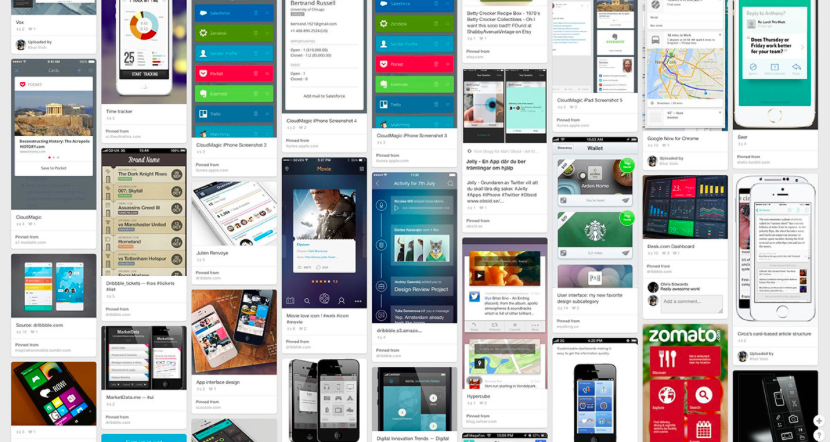

Me
- Developer at The Mechanism
- Full Stack — JavaScript, PHP and a little ruby
Bug Tracker
Fly trap — Front end widget for collecting bugs
- Simple interface for clients to comunicate issues
- Provides additional information, such as:
- Screen Size
- Operating System
- Browser information
What is a Widget?
- An embedded service
- Modular — Deploy once / use many times
Requirements
- Unobtrusive with dynamic interaction
- Hide when not in use
- Slide into place when called
- Responsive
- Outside the flow of the DOM
- Sandboxed so that it doesn’t cause any conflicts with the project DOM, JS or CSS
- Context Aware: the widget needs to receive infomation from the container
- Deploy on a unique server and implement across many projects
Lingo
- Service: The bug collector in the iframe
- Parent: Container or the project under tracking
Design
- Bug tracker sits inconspicuosly in the bottom left corner
- Dynamic — widget slides into view when necessary
- Responsive to fit on all device sizes
Iframes — The Good
- Sandboxed - protects from conflict and spillover
Iframes — The Bad
- Same-origin policy blocks communication between parent and child documents when service is loaded from another domain
- Unable to receive necessary information from the child
HTML5 postMessage
- Method to send messages between documents
- New specification. Does not work on older browsers
Remote Procedure Call and easyXDM
- Remote Procedure Call (RPC) — protocol for
remote invocation
- easyXDM — a library that leverages RPC for cross origin communication between documents
- Methods can be made open to the other context
- Eg. The child can initiate a method which will run in the parent and wait for return value
Embedding the Iframe
// Create iframe container
var iframeContainer = document.createElement('div');
document.getElementsByTagName('body')[0].appendChild(iframeContainer);
// Create RPC instance
var rpc = new easyXDM.Rpc({
remote: 'http://www.example.com/my-iframe',
container: iframeContainer,
props: {
frameborder: '0',
scrolling: 'no',
allowTransparency: 'true',
style: {
height: '100%',
width: '100%',
display: 'block'
}
}
},
{
local: {
parentInfo: function () {
return {
width: window.innerWidth || document.documentElement.clientWidth || document.body.clientWidth,
height: window.innerHeight || document.documentElement.clientHeight || document.body.clientHeight,
url: window.location.href
};
}
}
});
... And on the service side
var rpc = new easyXDM.Rpc({},
{
remote: {
parentInfo: {}
}
});
rpc.parentInfo(function(parentInfo) {
// do something with...
diagnosticInfo = {
'width' = parentInfo.width,
'height' = parentInfo.height,
'url' = parentInfo.url
}
});
Why Cross Domain and Iframes?
Card UI

What is Card UI?
- Card UI is a growing design pattern
Why is Card UI important?
- Can be used to embed foreign services within your website, webapp, native app
- No standard exists and current implementations are difficult
- Context aware services will be better when they can communicate with their container
Further Reading
- cardstack.io is an open source initiative to create a Card Ecosystem
- Oasis.js —
A lightweight library for embedding untrusted content and exposing capabilities
- Google Polymer — a library built on Web Components for creating custom elements